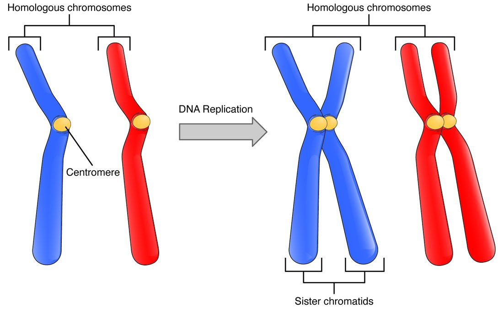

Meiosis and gametes
1Why this matters
Dana, 39, and her partner are expecting their first child, and a blood screening test suggests the baby may have an extra chromosome. Their genetic counselor explains that the error usually happens, about 9 times in 10, while the egg was dividing, and that the chance rises with the mother's age. To follow her explanation, you need to know how eggs and sperm are made: by a division that halves the chromosomes, called meiosis.
2What this builds on
3Quick check before you start
1. A human body cell has copied its DNA and is in metaphase of mitosis. How many chromosomes and chromatids does it hold?
- 46 chromosomes, 92 chromatids
- 92 chromosomes, 92 chromatids
- 23 chromosomes, 46 chromatids
Show the answer
Copying doubles the chromatids, not the chromosomes: each of the 46 chromosomes is now two sister chromatids joined at a centromere. The count reaches 92 chromosomes only in anaphase, when the sisters separate.
- Correct: 46 chromosomes, 92 chromatids:
- 92 chromosomes, 92 chromatids:
- 23 chromosomes, 46 chromatids:
2. What are sister chromatids?
- The two chromosomes of a pair, one from each parent
- Two identical copies of one chromosome made by DNA replication
- The two strands of one DNA double helix
Show the answer
DNA replication in S phase copies each chromosome. The two identical copies stay joined at the centromere and are called sister chromatids.
- The two chromosomes of a pair, one from each parent:
- Correct: Two identical copies of one chromosome made by DNA replication:
- The two strands of one DNA double helix:
3. Which organs are the gonads?
- The adrenal glands
- The testes and ovaries
- The pituitary and hypothalamus
Show the answer
The gonads are the testes and ovaries. They make the gametes and the sex hormones: testosterone from the testes, estrogens and progesterone from the ovaries.
- The adrenal glands:
- Correct: The testes and ovaries:
- The pituitary and hypothalamus:
4Anatomy

With labels hidden, select a box to reveal its label.
5How it works, step by step
- A diploid cell in the gonad copies its DNA in S phase.Each of its 46 chromosomes becomes two sister chromatids, 92 chromatids in all.
- In prophase I, each chromosome pairs with its homolog along its length.Paired homologs swap matching pieces by crossing over, making chromosomes with new mixes of alleles.
- In metaphase I, the pairs line up across the middle, each pair facing a random way.In anaphase I the homologs are pulled to opposite ends, and two haploid cells form, each with 23 chromosomes that are still double.
- In meiosis II, the sister chromatids of each chromosome are pulled apart.Four haploid cells form, each with 23 single chromosomes, and no two alike.
- A haploid sperm joins a haploid egg.The new cell has 46 chromosomes again: diploid, with one set from each parent.
6Core concepts
7A common mistake
The wrong idea: Meiosis is just mitosis done twice.
What actually happens: Meiosis II does work like mitosis, but meiosis I is different in kind. In meiosis I the homologous chromosomes pair up, cross over, line up as pairs and separate, while the sister chromatids stay together. Mitosis never pairs homologs. That is why mitosis keeps the chromosome number at 46, while meiosis I halves it to 23, and why meiosis makes cells that differ from the parent and from each other.
8Check yourself
Anything you miss goes into your review queue.
1. How many chromosomes does a human cell hold during anaphase I of meiosis?
- 23
- 46
- 92
- 69
Show the answer
In anaphase I, the homologs move apart but each is still two sister chromatids joined at a centromere. No chromatids split, so the count stays at 46 chromosomes (92 chromatids), 23 moving to each end.
- 23: 23 is the number that ends up at each end, or in each cell after telophase I, not the total in the cell during anaphase I.
- Correct: 46: Correct. 46 double chromosomes: the homologs separate but the sisters do not.
- 92: 92 is the count in anaphase of mitosis, when sister chromatids split and each becomes a chromosome. In anaphase I they stay joined.
- 69: 69 would be one and a half sets, which never occurs in a normal division.
2. A student listed the steps of meiosis I. One step is wrong. Which one?
- Each chromosome pairs with its homolog in prophase I
- Crossing over swaps pieces between homologs
- The pairs line up across the middle of the cell in metaphase I
- Sister chromatids are pulled apart in anaphase I
- Two cells form, each with 23 chromosomes
Show the answer
Anaphase I separates the homologs, not the sister chromatids. The sisters stay joined at the centromere until anaphase II. That is why each cell after meiosis I has 23 chromosomes that are still double.
- Each chromosome pairs with its homolog in prophase I: This step is right. Pairing of homologs is the hallmark of prophase I.
- Crossing over swaps pieces between homologs: This step is right. Crossing over happens while the homologs are paired.
- The pairs line up across the middle of the cell in metaphase I: This step is right. In metaphase I, chromosomes line up as pairs.
- Correct: Sister chromatids are pulled apart in anaphase I: This is the error. Anaphase I separates homologs; sister chromatids separate in anaphase II.
- Two cells form, each with 23 chromosomes: This step is right. Each cell gets one member of each of the 23 pairs.
3. Compare one of the two cells made by meiosis I with the cell that entered meiosis I (after its DNA was copied). Predict the change in each variable.
| Variable | Change |
|---|---|
| Number of chromosomes in the cell | — |
| Number of chromatids in the cell | — |
| Chromatids per chromosome | — |
| Amount of DNA in the cell | — |
Show the answer
Meiosis I is the reduction division. It halves the number of chromosomes and chromatids and the DNA in each cell, but each chromosome stays double until meiosis II.
- Number of chromosomes in the cell: down. Meiosis I sends one homolog of each pair to each cell, so the count falls from 46 to 23.
- Number of chromatids in the cell: down. Each of the 23 chromosomes still has two chromatids, so the cell has 46 chromatids instead of 92.
- Chromatids per chromosome: no change. Sister chromatids stay joined through meiosis I, so each chromosome is still made of two chromatids.
- Amount of DNA in the cell: down. Half the chromatids went to the other cell, so each cell has half the DNA: back to the amount of a G1 body cell.
4. A boy has the sex chromosomes XXY. Testing shows that he received one X from his mother and both an X and a Y from his father. In which division did the error happen?
- In the father's meiosis I
- In the father's meiosis II
- In the mother's meiosis I
- In the boy's own early cell divisions
Show the answer
In a man's meiosis, the X and the Y behave as a homologous pair and separate in anaphase I. A sperm carrying both an X and a Y means that pair failed to separate: nondisjunction in meiosis I.
- Correct: In the father's meiosis I: Correct. The X and Y are homologs, and homologs separate in meiosis I.
- In the father's meiosis II: In meiosis II, sister chromatids separate. A failure there would give a sperm with two X chromosomes or two Y chromosomes, not one of each.
- In the mother's meiosis I: The mother gave only her normal single X. The extra chromosome came from the father.
- In the boy's own early cell divisions: An error after the egg and sperm joined could not supply a Y from the father alongside his X, and it would usually give a mix of cell lines rather than XXY in every cell.
5. A plant has 2n = 12. Ignoring crossing over, how many genetically different gametes can independent assortment produce?
- 64
- 12
- 24
- 4,096
Show the answer
2n = 12 means 6 pairs. Each pair can send either homolog to a gamete, and the pairs assort independently: 2⁶ = 64.
- Correct: 64: Correct. 6 pairs, 2 choices each: 2 × 2 × 2 × 2 × 2 × 2 = 64.
- 12: 12 is the diploid number, not the number of combinations.
- 24: 24 is 2 × 12. The choices for each pair multiply; they are not added or doubled once.
- 4,096: 4,096 is 2¹², which treats all 12 chromosomes as independent choices. Only the 6 pairs are; one member of each pair goes to each gamete.
6. A couple asks which of them determines whether their baby will be a boy or a girl. What is the accurate answer?
- The mother, because the egg carries the X or the Y
- Both equally, because each gives one sex chromosome
- The father, because his sperm carry an X or a Y
- Neither: it depends on hormone levels in pregnancy
Show the answer
Every egg carries an X, because a woman's cells have two X chromosomes and no Y. A man's X and Y separate in meiosis I, so half his sperm carry an X and half a Y. The sperm that joins the egg decides: X gives XX, Y gives XY.
- The mother, because the egg carries the X or the Y: An egg never carries a Y chromosome; a woman has none to give.
- Both equally, because each gives one sex chromosome: Each parent does give one sex chromosome, but the mother's is always an X, so only the father's contribution varies.
- Correct: The father, because his sperm carry an X or a Y: Correct. The sperm carries either an X or a Y; the egg always carries an X.
- Neither: it depends on hormone levels in pregnancy: The chromosomes present at the start, and SRY on the Y, set whether the gonad becomes a testis. Hormones follow from that.
7. What is the difference between homologous chromosomes and sister chromatids?
- Homologs come one from each parent; sisters are copies from DNA replication
- Homologs are identical copies; sisters come one from each parent
- Homologs carry different genes; sister chromatids carry the same genes
- Homologs are found only in gametes; sisters are found only in body cells
Show the answer
Homologous chromosomes are the two members of a pair, one inherited from each parent: same genes in the same order, but possibly different alleles. Sister chromatids are the two identical copies of one chromosome made in S phase and joined at the centromere.
- Correct: Homologs come one from each parent; sisters are copies from DNA replication: Correct. Homologs are a matched pair from two parents; sisters are copies of one chromosome.
- Homologs are identical copies; sisters come one from each parent: This reverses the two. Sister chromatids are the identical copies.
- Homologs carry different genes; sister chromatids carry the same genes: Homologs carry the same genes, often in different versions (alleles).
- Homologs are found only in gametes; sisters are found only in body cells: Body cells hold homologous pairs, and every cell that copies its DNA has sister chromatids. Gametes have no homologous pairs.
8. During meiosis in one cell, one pair of homologs fail to separate in anaphase I, and meiosis II is normal. How many of the four gametes have the wrong number of chromosomes?
- None of the four
- One of the four
- Two of the four
- All four
Show the answer
The error in meiosis I puts both homologs into one cell and neither into the other. Meiosis II then splits each cell's chromosomes normally: the first cell gives two gametes with 24 chromosomes, and the second gives two with 22. All four are abnormal.
- None of the four: An error that puts both homologs into one cell must change the count in that cell's products and in its partner's.
- One of the four: One abnormal gamete cannot arise, because an extra chromosome in one cell always means a missing one in another.
- Two of the four: Two of four abnormal is the result of an error in meiosis II in one of the two cells: one gamete with 24, one with 22 and two normal.
- Correct: All four: Correct. Meiosis I nondisjunction makes every gamete from that cell abnormal: two with 24 and two with 22.
9Summary
Gametes (sperm and oocytes) are haploid, n = 23, and two of them together restore the diploid number, 2n = 46. Homologous chromosomes are the matched pairs, one from each parent, carrying the same genes but possibly different alleles. Meiosis copies DNA once and divides twice. Meiosis I pairs the homologs, lets them cross over and separates them, giving two haploid cells with double chromosomes; meiosis II separates the sister chromatids, giving four haploid cells with single chromosomes. Independent assortment (223 combinations) and crossing over make every gamete different. Nondisjunction gives gametes with 24 or 22 chromosomes and is more common in older mothers' oocytes. The sex chromosomes are XX or XY; the sperm decides which, and SRY on the Y makes the early gonad a testis.